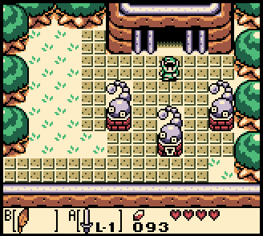
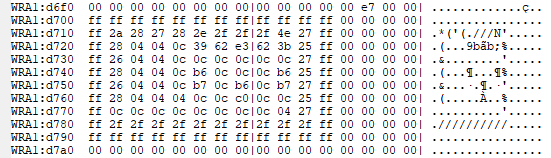
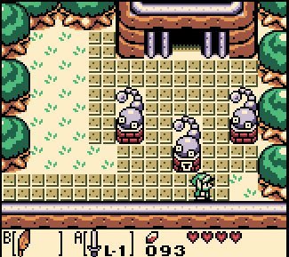

One of my favorite indie games is Anodyne, a game developed by Sean Han Tani 韓谷 and Joni Kittaka. It is a zelda-like inspired by The Legend of Zelda: Link’s Awakening, a longtime favorite. The game deals with themes of friendships, emotional labor, regret, and fugue (that’s my interpretation, anyway), while retaining the mechanical and exploratory fun of its inspirations.
In spring 2017, I started development on a zelda-like of my own, intended to explore depression, trauma, and trans identity. It was written in C, and deliberately constructed, both in its source code, art, and mechanics, to evoke the carefree innocence of my days playing Gameboy Color outside as a child.
A common mechanic in Zelda games for GBC is “corner walking”. In the first Legend of Zelda, Link “drifts” toward the center of tiles as he walks, to prevent getting stuck on corners. In A Link to the Past, the physical tile grid is more granular, with 8px by 8px physics tiles, and right triangle corners, avoiding the problem entirely.
But on the Gameboy Color, while graphical tiles were still 8px by 8px to suit the graphical hardware and rendering pipeline of the system, physical tiles were 16px by 16px—the same size, roughly, as Link and other characters. This was due to the fact that RAM on the GBC was more highly prized. So, each 16x16 logical “tile” was drawn with four 8x8 graphical characters.

a screenshot of Link’s Awakening DX

the corresponding physics data
Also, no diagonal tiles were implemented. This presented a problem: with such a low resolution for physics information (80 bytes + a border of “always solid” tiles outside the screen boundary), it was very easy for Link to get stuck on corners during play. The “drifting” mechanic of The Legend of Zelda would be infeasible, as Link could be drifting much farther; this would be visually jarring and make players feel as though they were not in control, as though Link were drunk.
So, the solution chosen was this: detect when link is moving toward a corner, with only a small overlap on the perpendicular axis, and “nudge” him around it, but only after he was touching the solid tile. Effectively, Link would “slide” or “sidle” along the wall to get around it. This felt natural during play, and was, in my opinion, a good solution.

the corner walk mechanic in action
Given that my game was attempting to evoke the same aesthetic, I wanted to have the same behavior. So, my not-very-good physics engine was given corner walk routines. However! It was more tricky to implement than I expected (as usual), and while I ultimately had a working implementation, it retained some bugs. For example: walking face-first into the middle of a long wall would result in the player character sliding off the corner of one wall tile into the face of its adjacent neighbor.
Looking back, I have several solutions to the problem in mind. That game is currently being rewritten in a different language so that porting to various platforms will be possible with the amount of time that I have.
Recently, I replayed Anodyne, because it holds a special place in my depressive, game-loving heart. I was plodding along, doing all the things, luxuriating in the excellent soundtrack, when something wholly unexpected happened:
I walked toward a boulder… and slid toward the middle of its edge. For a fleeting moment, it felt as though I had shared a knowing glance with the developer. It felt exactly akin to reading a particularly relatable line in a novel or poem, or seeing a character in film that somehow reflected your deepest nature back at you (I encourage you to go watch Bojack and cry, if you haven’t). It was a feeling so human, and inexorably tied not to the artwork, nor the music, nor the themes of the game itself, but to its physical construction as a sculpture of chiseled bytes, to the developmental process of the programmer.
I teared up the same way I would have in the consumption of any deeply relatable piece of art, and that experience, valuable and beautiful as it was to me, was completely incidental! I imagined Sean Han Tani 韓谷 (who did the programming work) sighing and muttering “Fuck it I guess” while poring over his own corner walking implementation, only for me to later get all this mileage out of a behavior that probably frustrated him.